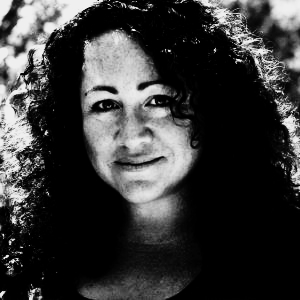

<section id="about">
    <div class="container">
        <div class="row">
            <div class="col-lg-8 col-lg-offset-2 text-center">
                <h2 class="section-heading text-center">About Me</h2>
                <hr class="primary">
            </div>
        </div>
        <div class="row">
            <div class="text-center">
                <blockquote>
                    <p style="font-size: 1.6em">What lies behind us and what lies before us are tiny matters compared to what lies within us. - Emerson</p>
                </blockquote>
            </div>
            <div class="col-lg-8 col-lg-offset-2 text-center">
                
            </div>
            <div class="col-lg-8 col-lg-offset-2 text-align">
                <p class="text-muted">From a young age, I knew that I wanted to help children heal from the pain and fear that I felt so viscerally in their presence. My first step toward that dream led me to Lesley University (it was still Lesley College in 1997!) where I received my Bachelors of Science with a concentration on child and family development.  I favored Jung, with his theories of the collective unconscious, universal archetypes and personality traits, and sprinkled in a heavy dose of women’s studies and a particular interest in the emerging field of movement therapy. It was also my first introduction to Buddhist study and meditation.</p>
                <p class="text-muted">Nothing felt like the exact fit of how I wanted to help people but I continued on the traditional path and got my first job as a counselor at a residential treatment facility.  One day, my colleague invited me to a small party of her closest female friends.  It was a fun, comfortable evening full of laughter and great snacks, and when my friend walked over to her bookshelf all the ladies erupted in hoots and cheers as she pulled out a Tarot deck and an ancient-looking book.  She picked a card for the woman next to her, flipped through the book, and began to read.</p>
                <p class="text-muted">I’m not sure what emboldened me to speak up when I was surrounded by older women whom I’d just met, but before I knew it, I was adding specific details to the vague book passage. My friend’s mouth hung open and she quickly turned to the woman next to her and swore that she had never talked to me about her personal life. I nodded emphatically that it was true. But then my friend turned to me and questioned how I could possibly know the things I did. I shrugged, suddenly self-conscious, and gave my honest answer—I didn’t know, it was just something that I’d always been able to sense about some people, and didn’t know that it wasn’t the norm.  The rest of the women begged me to pull a card for them and give my impressions. A few years later I decided to get some formal training in Tarot at Regina Russell’s Tea Room.</p>
                <p class="text-muted">Did I mention that I got my MFA in creative writing?! I’ll stop the stories now and just bullet out a brief snapshot of my most influential study that informs my current work. You can always ask questions about my background if you have them and I will answer as best I can.</p>
                <ul>
                    <li class="text-muted">In-depth, long-term work with Lucie McInnes, a practitioner of Barbara Brennan’s School of Healing</li>
                    <li class="text-muted">Counseling individuals and couples in Tarot readings since 1998</li>
                    <li class="text-muted">Mindfulness training at Thich Nhat Hanh’s monastery in 2006</li>
                    <li class="text-muted">Mindfulness meditation study with Nancy Hathaway, ongoing</li>
                    <li class="text-muted">Medicine Wheel shamanic work with Juanita Van de Wetering</li>
                    <li class="text-muted">5 Rhythms dance practice with Amara Pagano and Kari Luehman</li>
                    <li class="text-muted">Holding women’s circles in transformational work</li>
                    <li class="text-muted">Iyengar yoga teacher training with Kim Peralta</li>
                    <li class="text-muted">In-depth, long-term work with Laurie Hoover, master of SHEN therapy</li>
                </ul>
                <p class="text-muted">I’ve also managed to be married for 17 years to a most loving and supportive partner, and we have two fierce  and beautiful girls whom we raise in a home we built ourselves on the coast of Maine. And then there is my joy of a companion, Sylvie the 🐶. </p>
            </div>
        </div>
    </div>
</section>
